街紹介
Padova
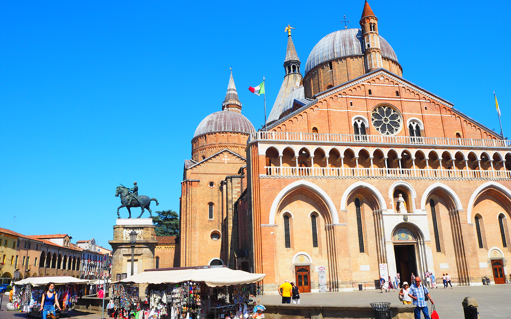
イタリア北東部、ヴェネト州に位置し、豊かな歴史と学問の伝統が息づいています。
ヨーロッパ最古の大学のひとつである パドヴァ大学 は、多くの偉人が学んだ知の拠点です。
ユネスコ世界遺産に登録された オルト・ボタニコ（パドヴァ植物園） は、
世界最古の学術植物園として知られ、貴重な植物が育まれています。
ヨーロッパ最大級の広場 プラート・デッラ・ヴァッレ は彫像が並ぶ壮大な景観が魅力です。
 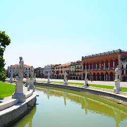
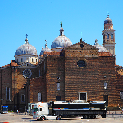
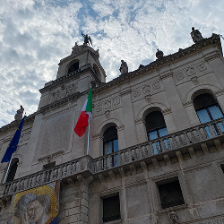
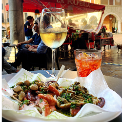
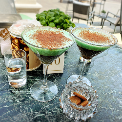
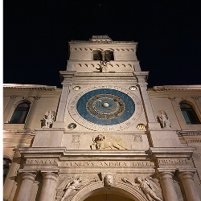
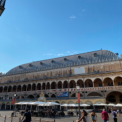
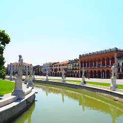
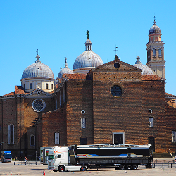
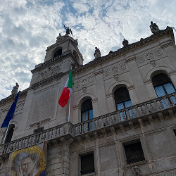
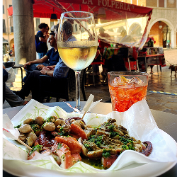
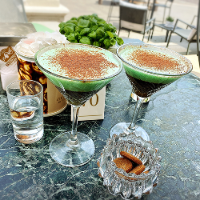
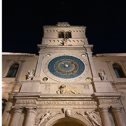
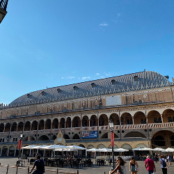